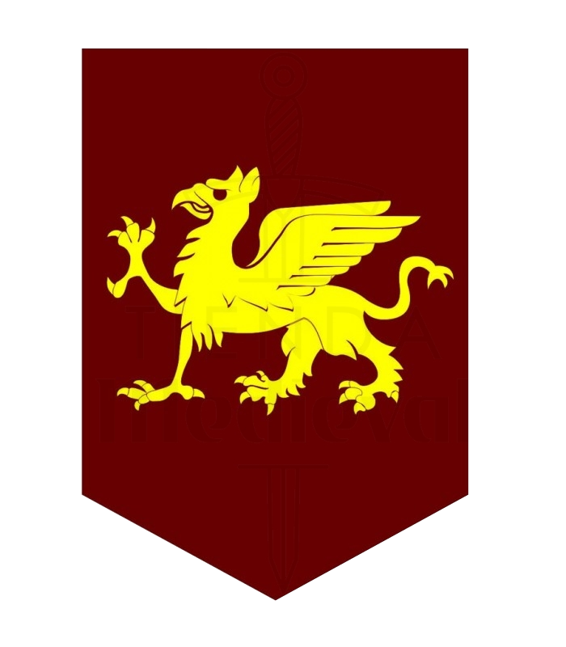

|  | Home | Desenvlvedor | jogo |
King of knights é um jogo singleplayer de ação e aventura, em que o jogador deve lutar contra diversos inimigos utilizando o cavaleiro Dalibor de Alcantará.
O jogo corre em visão aérea e em terceira pessoa, o cavaleiro tem como vantagem sua velocidade de movimentação, porém tem baixa resistência a ataques.
A cada inimigo morto o personagem ganha mais pontuação que permite que ele use o poder especial e avance para o próximo cenário, no último nível o jogador deve enfrentar o dragão Malus.
O escudo lhe permite bloquear o dano de ataques inimigos, porém não tem eficácia total contra Malus, por isso deve-se ter muito cuidado ao enfrentar tal inimigo.
Devido ao enorme peso do escudo não é possível utilizado enquanto ataca, por isso toda vez que o escudo estiver ativo o jogador não poderá deferir dano.
Para saber quando o escudo está ativo basta ver através do ícone que aparece no canto superior esquerdo toda vez que o jogador utilizar o escudo.
Quando usamos o poder especial o personagem libera uma enorme quantidade de poder, assim permitindo dar dano em área nos inimigos, além disso o ataque especial possui uma enorme eficácia contra o Dragão Malus, assim se tornando uma enorme vantagem.
Para usar o ataque especial, deve-se ter no mínimo 3 de poder, valor que aumenta cada vez que o jogador elimina um inimigo.
Os inimigos podem nascer fora do mapa e até mesmo sair dele quando necessário, assim podendo se locomover além da borda confundindo o jogador.